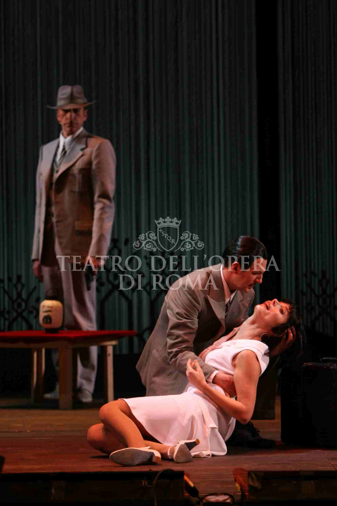
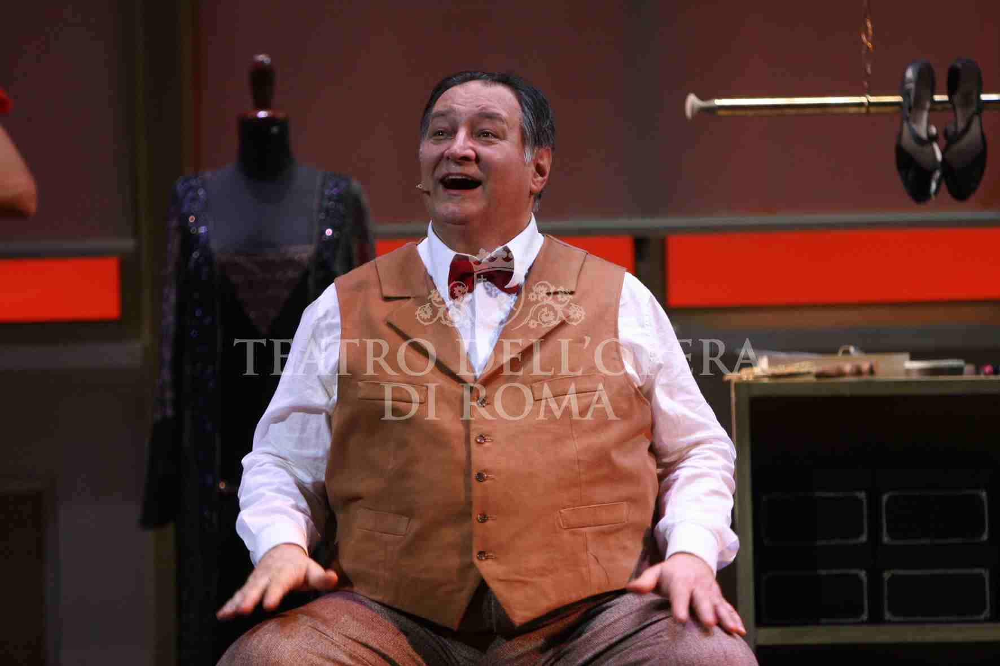
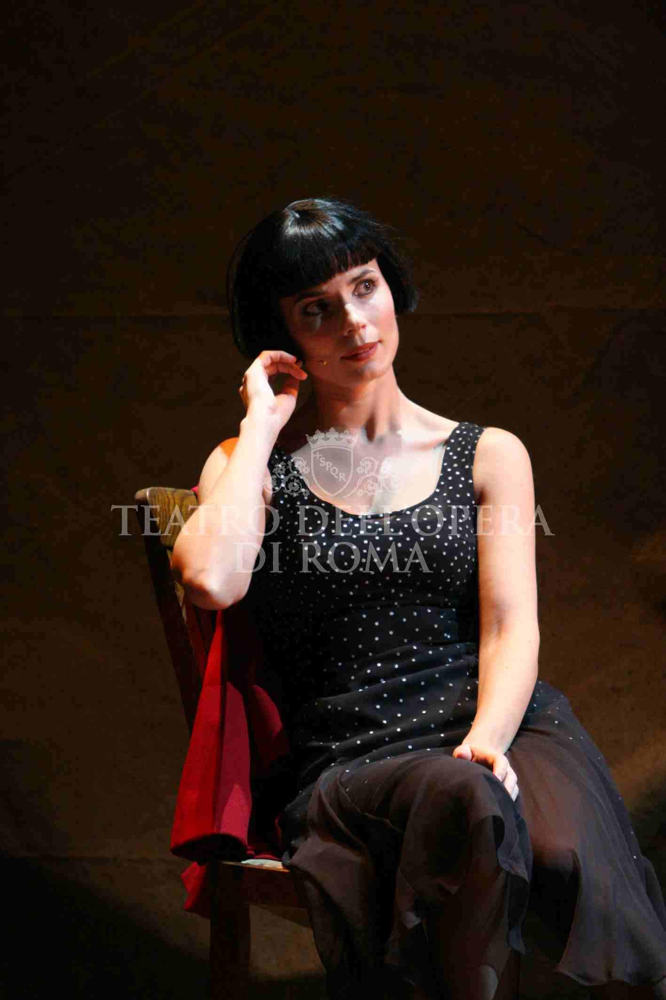

Per il Teatro Nazionale di Roma — sede del Teatro dell'Opera della capitale — nel febbraio 2007 Cristian Taraborrelli firma le scene di Marie Galante, l'opera-musical di Kurt Weill su libretto di Jacques Deval, scritta a Parigi nel 1934 da un Weill in fuga dalla Germania nazista. Nel ruolo del titolo, una protagonista d'eccezione: Chiara Muti, attrice e cantante, figlia di Riccardo Muti, che porta sulla scena il volto di Marie con una raffinatezza tutta scenica. Regia di Joseph Rochlitz, direzione di Vittorio Parisi, coreografia di Luc Bouy.
Cuore visivo dello spettacolo sono i costumi splendidi di Angela Buscemi: un'ouverture di stoffe e silhouette che attraversa Parigi, Marsiglia, Panama, e che conferisce a Marie Galante quella luce di porto, di esilio, di donna che attende un bastimento per tornare a casa. Sul palcoscenico, Taraborrelli costruisce un dispositivo scenico capace di scivolare dal cabaret francese al molo tropicale, dalla cantina dei contrabbandieri al cielo notturno di una baraccopoli.
La produzione del 2007 ha valore filologico: Marie Galante è opera rara, eseguita pochissime volte dopo la prima parigina del 1934 al Théâtre de Paris. Ripresa per la stagione lirica romana, con cinque recite (20, 21, 23, 24, 25 febbraio), restituisce al pubblico italiano una pagina sospesa fra opera, songspiel e teatro di varietà, dove il jazz di New Orleans, la musette parigina e il gospel afroamericano convivono in un unico organismo musicale.
For the Teatro Nazionale in Rome — the home stage of the Teatro dell'Opera of the Italian capital — in February 2007, Cristian Taraborrelli designed the sets for Marie Galante, the opera-musical by Kurt Weill to a libretto by Jacques Deval, written in Paris in 1934 by a Weill fleeing Nazi Germany. In the title role, an exceptional protagonist: Chiara Muti, actress and singer, daughter of Riccardo Muti, who brings Marie to the stage with a wholly theatrical grace. Direction by Joseph Rochlitz, conducted by Vittorio Parisi, with choreography by Luc Bouy.
The visual heart of the production is the splendid costumes by Angela Buscemi: an overture of fabrics and silhouettes that crosses Paris, Marseille, Panama, granting Marie Galante that light of harbour, of exile, of a woman waiting for a ship to take her home. On stage, Taraborrelli builds a scenic device able to slide from the French cabaret to the tropical pier, from the smugglers' cellar to the night sky of a shantytown.
The 2007 production has a philological value: Marie Galante is a rare work, performed very few times since its Parisian premiere in 1934 at the Théâtre de Paris. Revived for the Roman opera season, with five performances (20, 21, 23, 24, 25 February), it gave Italian audiences back a page suspended between opera, songspiel and variety theatre, where New Orleans jazz, Parisian musette and African-American gospel coexist within a single musical organism.
Pour le Teatro Nazionale de Rome — scène du Teatro dell'Opera de la capitale italienne — en février 2007, Cristian Taraborrelli signe les décors de Marie Galante, l'opéra-musical de Kurt Weill sur un livret de Jacques Deval, écrit à Paris en 1934 par un Weill en fuite de l'Allemagne nazie. Dans le rôle-titre, une protagoniste d'exception : Chiara Muti, actrice et chanteuse, fille de Riccardo Muti, qui porte le visage de Marie avec une élégance toute scénique. Mise en scène de Joseph Rochlitz, direction de Vittorio Parisi, chorégraphie de Luc Bouy.
Le cœur visuel du spectacle, ce sont les costumes splendides d'Angela Buscemi : une ouverture d'étoffes et de silhouettes qui traverse Paris, Marseille, Panama, et qui confère à Marie Galante cette lumière de port, d'exil, de femme qui attend un navire pour rentrer. Sur le plateau, Taraborrelli construit un dispositif scénique capable de glisser du cabaret français au quai tropical, de la cave des contrebandiers au ciel nocturne d'un bidonville.
La production de 2007 a une valeur philologique : Marie Galante est une œuvre rare, exécutée très peu après sa création parisienne de 1934 au Théâtre de Paris. Reprise pour la saison lyrique romaine, avec cinq représentations (20, 21, 23, 24, 25 février), elle a rendu au public italien une page suspendue entre opéra, songspiel et théâtre de variétés, où le jazz de la Nouvelle-Orléans, la musette parisienne et le gospel afro-américain coexistent dans un seul organisme musical.
L'Opera — Kurt Weill in esilio
Marie Galante nasce a Parigi nel 1934, in uno dei momenti più tesi della biografia di Kurt Weill. Nel marzo del 1933, dopo l'incendio del Reichstag e la presa del potere di Hitler, Weill — ebreo, autore di Brecht, simbolo della cultura della Repubblica di Weimar — lascia Berlino in fretta, lasciando dietro di sé manoscritti e una carriera. La fuga lo porta prima a Parigi, ospite di amici come Jean Cocteau, e poi negli Stati Uniti. La stagione parigina, breve ma fertile, è quella che produce Die sieben Todsünden (I sette peccati capitali) con Brecht e Balanchine, e appunto Marie Galante.
L'opera viene scritta su libretto di Jacques Deval, drammaturgo francese popolarissimo negli anni Trenta, basato su un suo romanzo omonimo. La prima ha luogo al Théâtre de Paris il 22 dicembre 1934: pubblico tiepido, accoglienza incerta. Eppure dalla partitura si stacca subito una canzone destinata a diventare leggenda: «J'attends un navire», intonata da Marie nell'attesa della nave che la riporterà a casa. Marlene Dietrich e Lotte Lenya, moglie di Weill, la incideranno facendone uno dei brani-simbolo dell'esilio europeo del Novecento.
Marie Galante è un'opera ibrida: più vicina al songspiel berlinese che al musical americano, più vicina alla pièce parigina che al teatro lirico. Weill vi sperimenta un linguaggio nuovo — jazz, gospel, valzer francese, marcia militare — che annuncia già la maniera del Weill americano di Broadway. La ripresa al Teatro Nazionale di Roma del 2007 è una delle rare occasioni in cui un pubblico italiano ha potuto incontrare quest'opera nella sua interezza.
Marie Galante was born in Paris in 1934, in one of the most tense moments of Kurt Weill's biography. In March 1933, after the Reichstag fire and Hitler's seizure of power, Weill — Jewish, author of Brecht's music, symbol of Weimar Republic culture — left Berlin in haste, leaving manuscripts and a career behind. His flight took him first to Paris, hosted by friends like Jean Cocteau, then on to the United States. The brief but fertile Parisian season produced Die sieben Todsünden (The Seven Deadly Sins) with Brecht and Balanchine, and Marie Galante.
The libretto is by Jacques Deval, a hugely popular French playwright of the 1930s, based on his own novel of the same name. The premiere took place at the Théâtre de Paris on 22 December 1934: lukewarm audience, uncertain reception. And yet, from the score, one song immediately stood apart and was destined to become a legend: «J'attends un navire», sung by Marie as she waits for the ship that will take her home. Marlene Dietrich and Lotte Lenya, Weill's wife, would go on to record it, turning it into one of the iconic pieces of the European exile of the twentieth century.
Marie Galante is a hybrid work: closer to the Berlin songspiel than to the American musical, closer to the Parisian play than to lyric opera. Weill experiments here with a new language — jazz, gospel, French waltz, military march — that already announces the manner of the Broadway Weill to come. The 2007 revival at the Teatro Nazionale in Rome is one of the rare occasions on which an Italian audience has been able to encounter the piece in full.
Marie Galante naît à Paris en 1934, dans l'un des moments les plus tendus de la biographie de Kurt Weill. En mars 1933, après l'incendie du Reichstag et l'arrivée d'Hitler au pouvoir, Weill — juif, compositeur de Brecht, symbole de la culture de la République de Weimar — quitte Berlin précipitamment, laissant derrière lui des manuscrits et une carrière. Sa fuite le mène d'abord à Paris, chez des amis comme Jean Cocteau, puis aux États-Unis. Brève mais féconde, la saison parisienne produit Die sieben Todsünden (Les Sept Péchés capitaux) avec Brecht et Balanchine, et précisément Marie Galante.
Le livret est de Jacques Deval, dramaturge français très populaire dans les années trente, d'après son propre roman du même nom. La création a lieu au Théâtre de Paris le 22 décembre 1934 : public tiède, accueil incertain. Et pourtant, de la partition, se détache aussitôt une chanson promise à la légende : «J'attends un navire», chantée par Marie dans l'attente du bateau qui la ramènera chez elle. Marlene Dietrich et Lotte Lenya, épouse de Weill, l'enregistreront, en faisant l'un des morceaux-symbole de l'exil européen du XXe siècle.
Marie Galante est une œuvre hybride : plus proche du songspiel berlinois que de la comédie musicale américaine, plus proche de la pièce parisienne que du théâtre lyrique. Weill y expérimente un langage nouveau — jazz, gospel, valse française, marche militaire — qui annonce déjà la manière du Weill américain de Broadway. La reprise au Teatro Nazionale de Rome en 2007 est l'une des rares occasions où un public italien a pu rencontrer l'œuvre dans son intégralité.
La Storia — Una francese a Panama
Marie è una giovane prostituta francese di Bordeaux, rapita e abbandonata in Panama da un capitano di nave. Per pagarsi il viaggio di ritorno in Francia accetta di lavorare come spia al servizio di un misterioso giapponese, Tokujiro Tsamatsui, che indaga sulle attività di un trafficante d'armi tedesco, Oswald Staub, attivo nei pressi del Canale. Tra cabaret di porto, bordelli, complotti internazionali e amori sbagliati, Marie diventa la pedina — e poi il cuore — di un romanzo di spionaggio coloniale.
Tutto, nell'opera, è attraversato da un'unica nostalgia: il navire, il bastimento che dovrebbe riportarla a casa. È il filo musicale che lega le scene, il refrain che ritorna come un battito, la stella polare di una donna in esilio. Marie morirà senza imbarcarsi, vittima del complotto che ha cercato di smascherare. Ma la sua canzone — «J'attends un navire» — sopravvive a lei, e diventa, fuori dall'opera, l'inno di tutti gli esuli del Novecento.
Marie is a young French prostitute from Bordeaux, kidnapped and abandoned in Panama by a ship's captain. To pay for her return trip to France, she agrees to work as a spy for a mysterious Japanese man, Tokujiro Tsamatsui, who is investigating the activities of a German arms trafficker, Oswald Staub, operating near the Canal. Between harbour cabarets, brothels, international plots and the wrong loves, Marie becomes the pawn — and then the heart — of a colonial espionage novel.
Everything in the opera is shot through with a single longing: the navire, the ship that should take her home. It is the musical thread that ties the scenes together, the refrain that returns like a heartbeat, the polar star of a woman in exile. Marie will die without ever embarking, a victim of the very plot she tried to expose. But her song — «J'attends un navire» — outlives her, and becomes, beyond the opera, the anthem of all the exiles of the twentieth century.
Marie est une jeune prostituée française de Bordeaux, enlevée et abandonnée à Panama par un capitaine de navire. Pour payer son voyage de retour en France, elle accepte de travailler comme espionne au service d'un mystérieux Japonais, Tokujiro Tsamatsui, qui enquête sur les activités d'un trafiquant d'armes allemand, Oswald Staub, opérant près du Canal. Entre cabarets de port, bordels, complots internationaux et amours mal placées, Marie devient le pion — puis le cœur — d'un roman d'espionnage colonial.
Tout, dans l'œuvre, est traversé par une seule nostalgie : le navire qui devrait la ramener chez elle. C'est le fil musical qui relie les scènes, le refrain qui revient comme un battement, l'étoile polaire d'une femme en exil. Marie mourra sans jamais s'embarquer, victime du complot même qu'elle a tenté de démasquer. Mais sa chanson — «J'attends un navire» — lui survit, et devient, hors de l'opéra, l'hymne de tous les exilés du XXe siècle.
La Visione — Costumi splendidi, luce di porto
La produzione del 2007 vive innanzitutto della bellezza dei costumi. Angela Buscemi, accanto a Cristian Taraborrelli, disegna una galleria di figure che attraversano tre mondi: la Parigi del cabaret, il porto francese di Marsiglia, la Panama coloniale. Vestiti scollati di seta, abiti da prostituta di lusso, divise da capitano, kimono di Tokujiro Tsamatsui, completi tropicali macchiati di sudore: ogni costume è un piccolo ritratto, un omaggio al figurinismo del dopoguerra francese e alla pittura di porto di Vlaminck.
La scenografia di Taraborrelli è costruita per scivolamenti: il cabaret diventa molo, il molo diventa cantina, la cantina diventa cielo notturno. Un dispositivo a strati, dove pannelli scorrevoli e fondali dipinti si succedono come fotografie di un viaggio. La luce è quella del porto, una luce di lampione — gialla, umida, lievemente offensiva — che già di per sé dice esilio.
In scena, oltre ai cantanti-attori, il solista gospel Derek Lee Ragin e il fisarmonicista musette Marco Lo Russo sono presenze fisiche, suonano dal palco: il jazz e il valzer francese diventano personaggi. Le coreografie di Luc Bouy completano il dispositivo: il movimento delle prostitute, dei marinai, dei doganieri compone la grammatica visiva di un porto che non è mai fermo.
The 2007 production lives above all on the beauty of its costumes. Angela Buscemi, alongside Cristian Taraborrelli, designs a gallery of figures that crosses three worlds: the cabaret Paris, the French harbour of Marseille, colonial Panama. Plunging silk dresses, luxury-prostitute gowns, captain's uniforms, Tokujiro Tsamatsui's kimono, sweat-stained tropical suits: each costume is a small portrait, a homage to post-war French costume drawing and to Vlaminck's harbour painting.
Taraborrelli's scenography is built around slidings: the cabaret becomes a pier, the pier becomes a cellar, the cellar becomes a night sky. A layered device, where sliding panels and painted backdrops follow one another like photographs of a journey. The light is that of a harbour, a lamppost light — yellow, humid, faintly offensive — that on its own already says exile.
On stage, beyond the singer-actors, the gospel soloist Derek Lee Ragin and the musette accordionist Marco Lo Russo are physical presences, playing from the boards: jazz and the French waltz become characters in their own right. The choreographies of Luc Bouy complete the device: the movement of the prostitutes, the sailors and the customs officers composes the visual grammar of a harbour that never stands still.
La production de 2007 vit avant tout de la beauté des costumes. Angela Buscemi, aux côtés de Cristian Taraborrelli, dessine une galerie de figures qui traverse trois mondes : le Paris des cabarets, le port français de Marseille, le Panama colonial. Robes décolletées de soie, tenues de prostituées de luxe, uniformes de capitaine, kimono de Tokujiro Tsamatsui, costumes tropicaux tachés de sueur : chaque costume est un petit portrait, un hommage au dessin de costume français d'après-guerre et à la peinture portuaire de Vlaminck.
La scénographie de Taraborrelli est construite par glissements : le cabaret devient quai, le quai devient cave, la cave devient ciel nocturne. Un dispositif à couches, où panneaux coulissants et fonds peints se succèdent comme des photographies d'un voyage. La lumière est celle du port, une lumière de réverbère — jaune, humide, légèrement offensante — qui dit à elle seule l'exil.
Sur le plateau, à côté des chanteurs-acteurs, le soliste gospel Derek Lee Ragin et l'accordéoniste musette Marco Lo Russo sont des présences physiques, ils jouent depuis la scène : le jazz et la valse française deviennent des personnages. Les chorégraphies de Luc Bouy complètent le dispositif : le mouvement des prostituées, des marins et des douaniers compose la grammaire visuelle d'un port qui ne s'arrête jamais.
Galleria — Foto di scena



Foto archivio storico © Teatro dell'Opera di Roma
Curiosità
Berlino, marzo 1933. Quando il Reichstag brucia e Hitler ottiene i pieni poteri, Kurt Weill e Lotte Lenya capiscono in pochi giorni che devono andarsene. Weill, già bersaglio di campagne diffamatorie naziste — ebreo, autore di Brecht, simbolo della Berlino di Weimar — lascia la città quasi senza bagagli. Sono passati appena diciotto mesi dalla prima di Mahagonny: il mondo tedesco di Weill non esiste più.
«J'attends un navire». È la canzone-talismano di Marie Galante, e divenne un inno di resistenza e d'attesa per tutta una generazione di esuli europei. Marlene Dietrich la inserì nei suoi recital americani, Lotte Lenya la incise in più versioni; durante l'Occupazione, in Francia, fu cantata sottovoce nei caffé come segnale di speranza. Il brano sopravvisse all'opera molto prima che l'opera fosse riscoperta.
Lotte Lenya, voce di Weill. Karoline Wilhelmine Charlotte Blamauer, in arte Lotte Lenya, sposa Kurt Weill nel 1926 (e una seconda volta nel 1937 dopo un divorzio): è la sua musa, la sua interprete, la cantante per cui Weill pensa metà del suo repertorio — dalla Jenny dell'Opera da tre soldi alla Anna dei Sette peccati capitali. Dopo la morte del marito nel 1950 sarà lei a custodire e diffondere il catalogo weilliano nel mondo.
Brecht-Weill, l'altra metà del cielo. Il sodalizio con Bertolt Brecht (Opera da tre soldi 1928, Mahagonny 1930, Lindbergh 1929, I sette peccati capitali 1933) aveva ridefinito il teatro musicale del Novecento. A Parigi, nel 1934, i due si incontrano per l'ultima volta proprio attorno a I sette peccati capitali. Marie Galante è il primo lavoro senza Brecht in territorio francese: Weill cerca un altro libretto, un'altra geografia, un'altra musica. Inventa, da solo, la propria via francese.
Un'opera quasi mai eseguita. Marie Galante non ha mai trovato la propria casa di repertorio. Dopo la prima parigina del 22 dicembre 1934 al Théâtre de Paris — chiusa dopo poche settimane — le riprese integrali sono rare: piuttosto, alcune canzoni (J'attends un navire, Le grand Lustucru, Le train du ciel) hanno avuto vita autonoma. La produzione del 2007 al Teatro Nazionale di Roma è quindi una rarità filologica, una delle pochissime occasioni in cui il pubblico italiano ha potuto ascoltare l'opera intera.
Jacques Deval, librettista popolare. Autore di teatro di grande successo — Tovaritch (1933), poi adattato a Hollywood — Deval scrive Marie Galante come pièce con musiche di scena, non come opera. La forma stessa dello spettacolo fu fluida fino all'ultima prova: Weill aggiunge, taglia, sposta i numeri musicali. Marie Galante è un'opera dai bordi mobili, costruita più come un montaggio di sequenze che come un'architettura chiusa.
Berlin, March 1933. When the Reichstag burned and Hitler obtained full powers, Kurt Weill and Lotte Lenya understood in just a few days that they had to leave. Weill, already the target of Nazi smear campaigns — Jewish, composer for Brecht, symbol of Weimar Berlin — left the city with almost no luggage. Barely eighteen months had passed since the premiere of Mahagonny: Weill's German world no longer existed.
«J'attends un navire». The talisman-song of Marie Galante became a hymn of resistance and waiting for an entire generation of European exiles. Marlene Dietrich included it in her American recitals, Lotte Lenya recorded it in several versions; during the Occupation, in France, it was sung under one's breath in the cafés as a signal of hope. The song outlived the opera long before the opera itself was rediscovered.
Lotte Lenya, the voice of Weill. Karoline Wilhelmine Charlotte Blamauer, known as Lotte Lenya, married Kurt Weill in 1926 (and again in 1937 after a divorce): she was his muse, his performer, the singer for whom Weill conceived half of his catalogue — from Jenny of the Threepenny Opera to Anna of the Seven Deadly Sins. After her husband's death in 1950 she would be the keeper and ambassador of his work around the world.
Brecht-Weill, the other half of the sky. The partnership with Bertolt Brecht (Threepenny Opera 1928, Mahagonny 1930, Lindbergh 1929, Seven Deadly Sins 1933) had redefined twentieth-century music theatre. In Paris in 1934, the two met for the last time around the Seven Deadly Sins. Marie Galante is the first piece without Brecht on French ground: Weill looks for another librettist, another geography, another music. He invents, alone, his own French way.
An almost never-performed opera. Marie Galante has never found a repertory home. After the Parisian premiere of 22 December 1934 at the Théâtre de Paris — closed after a few weeks — full revivals are rare: rather, some of its songs (J'attends un navire, Le grand Lustucru, Le train du ciel) have had a life of their own. The 2007 production at the Teatro Nazionale in Rome is therefore a philological rarity, one of the very few occasions on which an Italian audience has been able to hear the whole work.
Jacques Deval, popular playwright. A hugely successful theatre author — Tovaritch (1933), later adapted by Hollywood — Deval wrote Marie Galante as a play with incidental music, not as an opera. The form of the show itself was fluid right up to the final rehearsal: Weill added, cut and moved the musical numbers. Marie Galante is a work with shifting borders, built more like a montage of sequences than as a closed architecture.
Berlin, mars 1933. Lorsque le Reichstag brûle et qu'Hitler obtient les pleins pouvoirs, Kurt Weill et Lotte Lenya comprennent en quelques jours qu'ils doivent partir. Weill, déjà cible des campagnes diffamatoires nazies — juif, compositeur de Brecht, symbole de la Berlin de Weimar — quitte la ville presque sans bagages. À peine dix-huit mois se sont écoulés depuis la création de Mahagonny : le monde allemand de Weill n'existe plus.
«J'attends un navire». La chanson-talisman de Marie Galante devint un hymne de résistance et d'attente pour toute une génération d'exilés européens. Marlene Dietrich l'introduisit dans ses récitals américains, Lotte Lenya l'enregistra en plusieurs versions ; pendant l'Occupation, en France, elle était fredonnée dans les cafés comme un signal d'espoir. La chanson survit à l'opéra bien avant que l'opéra lui-même ne soit redécouvert.
Lotte Lenya, la voix de Weill. Karoline Wilhelmine Charlotte Blamauer, dite Lotte Lenya, épouse Kurt Weill en 1926 (et une seconde fois en 1937 après un divorce) : elle est sa muse, son interprète, la chanteuse pour laquelle Weill conçoit la moitié de son catalogue — de Jenny de l'Opéra de quat'sous à Anna des Sept Péchés capitaux. Après la mort de son mari en 1950, c'est elle qui veillera sur l'œuvre weilliennne dans le monde entier.
Brecht-Weill, l'autre moitié du ciel. Le compagnonnage avec Bertolt Brecht (Opéra de quat'sous 1928, Mahagonny 1930, Lindbergh 1929, Sept Péchés capitaux 1933) avait redéfini le théâtre musical du XXe siècle. À Paris, en 1934, les deux se rencontrent pour la dernière fois précisément autour des Sept Péchés. Marie Galante est la première œuvre sans Brecht en territoire français : Weill cherche un autre librettiste, une autre géographie, une autre musique. Il invente seul sa voie française.
Une œuvre presque jamais jouée. Marie Galante n'a jamais trouvé sa maison de répertoire. Après la création parisienne du 22 décembre 1934 au Théâtre de Paris — fermée après quelques semaines — les reprises intégrales sont rares : quelques chansons en revanche (J'attends un navire, Le grand Lustucru, Le train du ciel) ont eu une vie autonome. La production de 2007 au Teatro Nazionale de Rome est donc une rareté philologique, l'une des très rares occasions où le public italien a pu entendre l'œuvre entière.
Jacques Deval, dramaturge populaire. Auteur de théâtre à grand succès — Tovaritch (1933), adapté ensuite par Hollywood — Deval écrit Marie Galante comme une pièce avec musique de scène, non comme un opéra. La forme même du spectacle resta fluide jusqu'à la dernière répétition : Weill ajoute, coupe, déplace les numéros musicaux. Marie Galante est une œuvre aux bords mobiles, construite plutôt comme un montage de séquences que comme une architecture fermée.
La Protagonista — Chiara Muti
Chiara Muti (Napoli, 16 maggio 1972) appartiene a una delle dinastie musicali più influenti d'Europa. Il padre è Riccardo Muti, direttore principale del Teatro alla Scala dal 1986 al 2005, music director della Chicago Symphony Orchestra dal 2010, una delle bacchette decisive del secondo Novecento. La madre è Cristina Mazzavillani Muti, attrice, regista e fondatrice nel 1990 del Ravenna Festival, manifestazione che ha riportato la città bizantina al centro della geografia musicale italiana. Chiara cresce dunque fra le prove di Verdi e Mozart al Maggio Musicale Fiorentino e alla Scala, fra il backstage del Festival e l'apprendistato silenzioso del mestiere: assiste a tutto, ma sceglie il teatro di prosa come prima lingua.
Si forma all'Accademia Nazionale d'Arte Drammatica Silvio d'Amico di Roma, la più antica scuola di teatro italiana, e diventa allieva di Luca Ronconi: maestro che le trasmette il rigore della parola, l'attenzione alla partitura del testo, l'idea che ogni gesto in scena sia il risultato di una decisione filologica. Il debutto cinematografico arriva giovanissima, a ventidue anni, con un ruolo memorabile: Una pura formalità di Giuseppe Tornatore (1994), accanto a Gérard Depardieu e a Roman Polanski nel ruolo dell'ispettore. Il film — presentato in concorso al Festival di Cannes — le vale subito una collocazione internazionale. Seguono lavori d'autore al cinema (Massimo Spano, Pasquale Pozzessere, Pasquale Squitieri) e una lunga carriera di prosa con Ronconi, Aldo Trionfo, Lluis Pasqual, in spettacoli che attraversano Pirandello, Shakespeare, Ibsen, il teatro contemporaneo.
Dalla seconda metà degli anni Duemila Chiara Muti compie il passaggio decisivo verso la regia lirica. Debutta al Ravenna Festival e firma poi allestimenti accolti dai più importanti palcoscenici europei: Manon Lescaut, Le nozze di Figaro, Don Pasquale, I Capuleti e i Montecchi, Le donne curiose di Wolf-Ferrari, fino al Macbeth verdiano. La sua firma di regista è riconoscibile per tre tratti: una drammaturgia rigorosa che parte sempre dal libretto, una direzione d'attore di scuola di prosa che pretende verità dai cantanti, una scrittura visiva sobria che rifiuta la spettacolarità gratuita. Nel 2007, quando interpreta Marie Galante, questa traiettoria sta proprio cominciando: il personaggio di Weill diventa per lei un laboratorio di passaggio, fra l'ultima stagione da attrice e la nascente vocazione registica.
Marie Galante 2007 le offre un ruolo di crossover ideale: parlato, cantato, ballato. Chiara Muti porta sulla scena romana un timbro fragile e tenace, una presenza che attraversa la materia weilliana senza imitarla — né Lotte Lenya né Dietrich, né il cabaret berlinese né il musical anglosassone: una Marie italiana, intima, fatta di silenzi e di scatti improvvisi, costruita sul respiro della parola prima ancora che sulla linea melodica. La sua interpretazione fa di «J'attends un navire» il centro emotivo dell'intera serata e trasforma l'opera-musical di Weill in un teatro di camera, da camera da letto, da camera della memoria. È questa attrice-cantante in transizione verso la regia che Cristian Taraborrelli e Joseph Rochlitz vestono e mettono in scena: il loro disegno costumistico (firmato Angela Buscemi) si misura con un'interprete che pensa ogni dettaglio come dramaturgia, dalle calze al velo, dal cappotto alla tasca interna.
Chiara Muti (Naples, 16 May 1972) belongs to one of Europe's most influential musical dynasties. Her father is Riccardo Muti, principal conductor of Teatro alla Scala from 1986 to 2005 and music director of the Chicago Symphony Orchestra since 2010 — one of the decisive batons of the late twentieth century. Her mother is Cristina Mazzavillani Muti, actress, director and founder in 1990 of the Ravenna Festival, the event that brought the Byzantine city back to the centre of Italian musical geography. Chiara therefore grew up between Verdi and Mozart rehearsals at the Maggio Musicale Fiorentino and La Scala, between the backstage of the Festival and the silent apprenticeship of the craft: she watched everything, but chose spoken theatre as her first language.
She trained at the Accademia Nazionale d'Arte Drammatica Silvio d'Amico in Rome, the oldest Italian drama school, and became a pupil of Luca Ronconi: a master who taught her the rigour of the word, attention to the text's score, the idea that every gesture on stage is the outcome of a philological decision. Her cinema debut came at twenty-two with a memorable role: Una pura formalità by Giuseppe Tornatore (1994), opposite Gérard Depardieu and Roman Polanski as the inspector. Presented in competition at the Cannes Film Festival, the film immediately granted her an international placement. Auteur work in cinema followed (Massimo Spano, Pasquale Pozzessere, Pasquale Squitieri) along with a long stage career with Ronconi, Aldo Trionfo and Lluis Pasqual, in productions ranging across Pirandello, Shakespeare, Ibsen and contemporary drama.
From the second half of the 2000s Chiara Muti made the decisive step toward opera direction. She debuted at the Ravenna Festival and went on to sign productions welcomed by Europe's leading stages: Manon Lescaut, Le nozze di Figaro, Don Pasquale, I Capuleti e i Montecchi, Wolf-Ferrari's Le donne curiose, all the way to Verdi's Macbeth. Her directorial signature is recognisable by three traits: a rigorous dramaturgy that always starts from the libretto, an actor's-school direction of singers that demands truth from them, and a sober visual writing that refuses gratuitous spectacle. In 2007, when she performs Marie Galante, this trajectory is just beginning: Weill's character becomes for her a transitional laboratory between her last actress season and her budding directorial vocation.
Marie Galante 2007 offers her an ideal crossover role: spoken, sung, danced. Chiara Muti brings to the Roman stage a fragile and tenacious timbre, a presence that crosses Weillian matter without imitating it — neither Lotte Lenya nor Dietrich, neither Berlin cabaret nor Anglo-Saxon musical: an Italian Marie, intimate, made of silences and sudden bursts, built on the breath of speech before the melodic line. Her interpretation makes «J'attends un navire» the emotional centre of the whole evening and turns Weill's opera-musical into chamber theatre — bedroom theatre, theatre of memory. It is this actress-singer in transition to direction whom Cristian Taraborrelli and Joseph Rochlitz dress and stage: their costume design (with Angela Buscemi) measures itself against an interpreter who thinks every detail as dramaturgy, from stockings to veil, from coat to inner pocket.
Chiara Muti (Naples, 16 mai 1972) appartient à l'une des dynasties musicales les plus influentes d'Europe. Son père est Riccardo Muti, chef principal du Teatro alla Scala de 1986 à 2005, directeur musical du Chicago Symphony Orchestra depuis 2010 — l'une des baguettes décisives de la fin du XXe siècle. Sa mère est Cristina Mazzavillani Muti, actrice, metteur en scène et fondatrice en 1990 du Ravenna Festival, manifestation qui a remis la cité byzantine au centre de la géographie musicale italienne. Chiara grandit donc entre les répétitions de Verdi et de Mozart au Maggio Musicale Fiorentino et à la Scala, entre les coulisses du Festival et l'apprentissage silencieux du métier : elle observe tout, mais choisit le théâtre parlé comme première langue.
Elle se forme à l'Accademia Nazionale d'Arte Drammatica Silvio d'Amico de Rome, la plus ancienne école de théâtre italienne, et devient l'élève de Luca Ronconi : maître qui lui transmet la rigueur du mot, l'attention à la partition du texte, l'idée que chaque geste en scène est le résultat d'une décision philologique. Le début au cinéma arrive jeune, à vingt-deux ans, avec un rôle mémorable : Una pura formalità de Giuseppe Tornatore (1994), aux côtés de Gérard Depardieu et de Roman Polanski dans le rôle de l'inspecteur. Présenté en compétition au Festival de Cannes, le film lui vaut immédiatement une place internationale. Suivent des travaux d'auteur au cinéma (Massimo Spano, Pasquale Pozzessere, Pasquale Squitieri) et une longue carrière de prose avec Ronconi, Aldo Trionfo, Lluis Pasqual, dans des spectacles qui traversent Pirandello, Shakespeare, Ibsen, le théâtre contemporain.
À partir de la seconde moitié des années 2000, Chiara Muti accomplit le passage décisif vers la mise en scène lyrique. Elle débute au Ravenna Festival et signe ensuite des productions accueillies par les plus importantes scènes européennes : Manon Lescaut, Le nozze di Figaro, Don Pasquale, I Capuleti e i Montecchi, Le donne curiose de Wolf-Ferrari, jusqu'au Macbeth verdien. Sa signature de metteur en scène se reconnaît à trois traits : une dramaturgie rigoureuse qui part toujours du livret, une direction d'acteurs héritée du théâtre parlé qui exige la vérité des chanteurs, une écriture visuelle sobre qui refuse la spectacularité gratuite. En 2007, quand elle interprète Marie Galante, cette trajectoire commence tout juste : le personnage de Weill devient pour elle un laboratoire de passage, entre la dernière saison d'actrice et la vocation naissante de metteur en scène.
Marie Galante 2007 lui offre un rôle crossover idéal : parlé, chanté, dansé. Chiara Muti porte sur la scène romaine un timbre fragile et tenace, une présence qui traverse la matière weillienne sans l'imiter — ni Lotte Lenya, ni Dietrich, ni le cabaret berlinois ni la comédie musicale anglo-saxonne : une Marie italienne, intime, faite de silences et de soubresauts, construite sur le souffle de la parole avant même la ligne mélodique. Son interprétation fait de «J'attends un navire» le centre émotionnel de toute la soirée et transforme l'opéra-musical de Weill en théâtre de chambre — chambre à coucher, chambre de la mémoire. C'est cette actrice-chanteuse en transit vers la mise en scène que Cristian Taraborrelli et Joseph Rochlitz habillent et mettent en scène : leur dessin costumier (avec Angela Buscemi) se mesure à une interprète qui pense chaque détail comme dramaturgie, des bas au voile, du manteau à la poche intérieure.
I Collaboratori
Regia
Joseph Rochlitz
Regista, produttore e documentarista di origine ungherese, formatosi tra Vienna e Roma. Ha lavorato lungamente su materiali storici legati al Novecento europeo — in particolare alle vicende dell'esilio ebraico durante il nazismo — firmando documentari premiati nei principali festival internazionali. La regia di Marie Galante è per lui un terreno naturale: l'opera weilliana porta sul palcoscenico le stesse geografie dell'esilio che attraversano il suo lavoro cinematografico, e Rochlitz le restituisce con un occhio insieme storico e teatrale.
Direttore d'orchestra
Vittorio Parisi
Direttore d'orchestra milanese, formato al Conservatorio Verdi della sua città e perfezionatosi a Vienna con Hans Swarowsky. Specialista del repertorio del Novecento — con un'attenzione particolare a Weill, Schoenberg, Berg, Hindemith e ai compositori dell'esilio europeo — è titolare della cattedra di Direzione d'orchestra al Conservatorio di Milano e ospite regolare delle stagioni della Scala, della RAI e dei principali festival italiani. Per Marie Galante restituisce con scrupolo filologico le mille anime della partitura weilliana: jazz, valzer, musette, gospel, marcia.
Coreografia
Luc Bouy
Coreografo francese, formatosi tra Parigi e Bruxelles, attivo internazionalmente nel teatro di prosa, nell'opera e nel teatro-danza. Per Marie Galante costruisce una grammatica del movimento di porto: marinai, prostitute, doganieri, ballerine di cabaret diventano una piccola folla in costante deriva, traduzione fisica del jazz e della musette di Weill.
Costumi
Angela Buscemi
Costumista e illustratrice, collaboratrice storica dello studio Taraborrelli per il disegno dei figurini e dei costumi. Per Marie Galante firma una galleria di figure che attraversa Parigi, Marsiglia e Panama: abiti di seta scollati, kimono, divise, completi tropicali. È il cuore visivo della produzione, ed è il punto in cui la regia, la scenografia e la musica trovano un colore comune.
Direction
Joseph Rochlitz
Director, producer and documentary filmmaker of Hungarian origin, trained between Vienna and Rome. He has worked extensively on historical material connected to twentieth-century Europe — in particular the Jewish exile during Nazism — with documentaries awarded at major international festivals. Directing Marie Galante is for him natural ground: the Weillian opera brings to the stage the same geographies of exile that run through his film work, and Rochlitz delivers them with an eye that is at once historical and theatrical.
Conductor
Vittorio Parisi
Milanese conductor, trained at the Verdi Conservatory of his city and a pupil of Hans Swarowsky in Vienna. A specialist of the twentieth-century repertoire — with a particular care for Weill, Schoenberg, Berg, Hindemith and the composers of European exile — he holds the chair of Orchestral Conducting at the Milan Conservatory and is a regular guest of La Scala, RAI and the main Italian festivals. For Marie Galante he returns, with philological scruple, the thousand souls of the Weillian score: jazz, waltz, musette, gospel, march.
Choreography
Luc Bouy
French choreographer, trained between Paris and Brussels, internationally active in spoken theatre, opera and dance theatre. For Marie Galante he builds a grammar of harbour movement: sailors, prostitutes, customs officers and cabaret dancers become a small crowd in constant drift, the physical translation of Weill's jazz and musette.
Costumes
Angela Buscemi
Costume designer and illustrator, longstanding collaborator of Taraborrelli's studio for figurino and costume drawing. For Marie Galante she signs a gallery of figures crossing Paris, Marseille and Panama: plunging silk gowns, kimonos, uniforms, tropical suits. It is the visual heart of the production, the point where direction, scenography and music meet on a shared colour.
Mise en scène
Joseph Rochlitz
Metteur en scène, producteur et documentariste d'origine hongroise, formé entre Vienne et Rome. Il a longuement travaillé sur des matériaux historiques liés au XXe siècle européen — et en particulier à l'exil juif sous le nazisme — signant des documentaires primés dans les principaux festivals internationaux. La mise en scène de Marie Galante est pour lui un terrain naturel : l'opéra weillienne porte sur le plateau les géographies de l'exil que traverse son travail cinématographique, et Rochlitz les restitue avec un regard à la fois historique et théâtral.
Chef d'orchestre
Vittorio Parisi
Chef d'orchestre milanais, formé au Conservatoire Verdi de sa ville et élève de Hans Swarowsky à Vienne. Spécialiste du répertoire du XXe siècle — avec un soin particulier pour Weill, Schoenberg, Berg, Hindemith et les compositeurs de l'exil européen — il est titulaire de la chaire de direction d'orchestre au Conservatoire de Milan et invité régulier de la Scala, de la RAI et des grands festivals italiens. Pour Marie Galante, il restitue avec scrupule philologique les mille âmes de la partition weillienne : jazz, valse, musette, gospel, marche.
Chorégraphie
Luc Bouy
Chorégraphe français, formé entre Paris et Bruxelles, actif internationalement au théâtre, à l'opéra et au théâtre-danse. Pour Marie Galante il construit une grammaire du mouvement portuaire : marins, prostituées, douaniers, danseuses de cabaret deviennent une petite foule en dérive constante, traduction physique du jazz et de la musette de Weill.
Costumes
Angela Buscemi
Costumière et illustratrice, collaboratrice de longue date du studio Taraborrelli pour les figurines et le dessin des costumes. Pour Marie Galante elle signe une galerie de figures qui traverse Paris, Marseille et Panama : robes de soie décolletées, kimonos, uniformes, costumes tropicaux. C'est le cœur visuel de la production, le point où la mise en scène, la scénographie et la musique trouvent une couleur commune.
Cast Principale
Creative Team
Tags